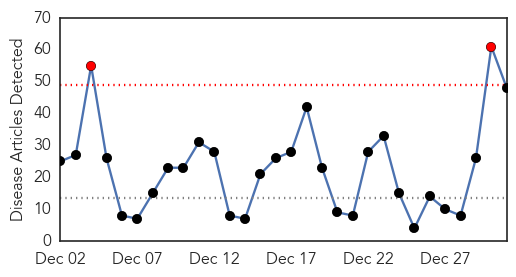
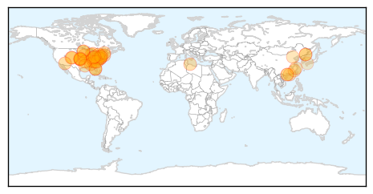
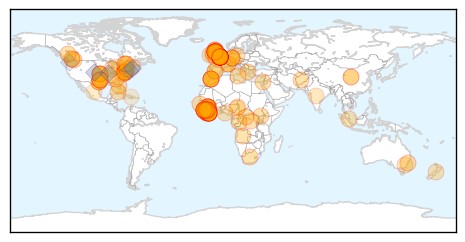

Influenza
30-Day Web Trend
2 alerts, 0 warnings

30-Day Twitter Trend
7 alerts, 0 warnings

Article Locations
Article Confidences

Top Articles:
- 1.000
- 2 local children die from flu complications as virus spreads across United States
- 1.000
- Summit County sees spike in flu cases around the holidays
- 1.000
- Flu clobbers Cincy, NKY, kills 2 children
- 1.000
- Flu season is here, and it looks like a bad one
- 1.000
- Flu ‘Epidemic’ Isn’t Necessarily As Scary As It Sounds
- 0.999
- Flu season hitting Upstate hard
- 0.999
- Widespread Flu Outbreak In Connecticut
- 0.999
- Health commish: ‘If you’re sick, stay home’ on New Year’s Eve
- 0.999
- Nasty flu season strikes as H3N2 cases spike across Canada
- 0.999
- Influenza epidemic: Flu hospitalizations rise in West Michigan
- 0.998
- ‘We’re still right in the eye of the storm’
- 0.998
- Tennessee Department of Health urges increased efforts to prevent Flu and Flu Complications
- 0.997
- Flu Epidemic Hits US, Vaccine Not Effective Against Current Strain
- 0.997
- CDC: Flu widespread in Florida and most states; 837 deaths reported
- 0.996
- Spartanburg Regional Healthcare System - WYFF Home
- 0.996
- Ashburn fifth grader dies from flu complications
- 0.995
- Flu cases spiking in Pennsylvania
- 0.994
- 1,293 Coloradans hospitalized for flu so far this season
- 0.994
- Widespread flu being reported across country
- 0.994
- Iowa seeing increase in influenza
- 0.992
- Flu cases top 1,200 in Greene County
- 0.990
- Erie County reports major spike in flu cases
- 0.989
- Reading Hospital sees spike in flu cases
- 0.985
- ER Doctor: No Cause for Alarm with Flu 'Epidemic' -
- 0.985
- Flu season hitting fast, hard
- 0.981
- Licking Memorial asking sick visitors to stay home
- 0.980
- Flu cases setting records across Minnesota
- 0.979
- Down with the flu? Youre not alone
- 0.976
- Hong Kong to cull 15,000 chickens after H7N9 virus found
- 0.976
- Spike in area flu cases limits visitation at ACH - Alliance Review
- 0.974
- CDC: Flu At Epidemic Level, 15 Children Have Died
- 0.970
- WCAX.COM Local Vermont News, Weather and Sports-
- 0.962
- Active flu outbreaks hit three Penticton care homes
- 0.957
- Mission Health Restricting Hospital Visits Because Of Flu
- 0.952
- H3N2 flu virus could be especially deadly to children, elderly (VIDEO)
- 0.946
- Bird flu kills five in Libya
- 0.928
- CDC warns flu epidemic is ravaging Alabama, here's how to avoid it
- 0.923
- Flu Bug Biting Northeast Kansas Hard
- 0.871
- Update on contact tracing for imported live chickens positive for avian influenza A(H7)
- 0.856
- Flu advisory issued in Martin County
- 0.846
- Tighter poultry controls sought
- 0.830
- Hong Kong culls chickens, suspends imports after H7 bird flu found
- 0.812
- Hong Kong culls chickens, suspends imports after H7 bird flu found
- 0.801
- HK culls chickens, suspends imports of live poultry
- 0.713
- Family loses child to complications with flu
- 0.705
- Hong Kong to cull thousands of chickens over avian influenza
- 0.663
- Hong Kong culls chickens after bird flu found
- 0.629
- Hong Kong bans Japan poultry in bird flu scare
Top Tweets:
-
No tweets found for Dec 31, 2014
Ebola
30-Day Web Trend
0 alerts, 0 warnings

30-Day Twitter Trend
0 alerts, 0 warnings

Article Locations
Article Confidences
Top Articles:
- 1.000
- Dozens Of New Cases Emerge Near Sierra Leone Border, Authorities Confirm
- 1.000
- Ebola spreads in Sierra Leone as global cases top 20,000
- 1.000
- Experts: It was a busy, black-eye year for disease control
- 1.000
- Ebola: Q&A What you need to know
- 1.000
- Patient being tested for Ebola in Kelowna not believed to be a risk
- 1.000
- Risk of disease spreading 'very low'
- 1.000
- Ebola in the UK: Risk of catching virus remains 'very low', say health officials
- 1.000
- Ebola in the UK: Infected nurse Pauline Cafferkey treated with survivors' blood plasma and experimental drugs
- 1.000
- Despite best efforts, Ebola still a danger
- 1.000
- Ebola spreads in Sierra Leone as deaths rise above 7,900
- 1.000
- Ebola epidemic was an 'avoidable crisis'
- 1.000
- Ebola pace shows little let-up in Sierra Leone
- 1.000
- Final Ebola test negative
- 1.000
- First Case of Ebola in UK: Scotland Confirms Nurse Positive for Virus
- 1.000
- Ebola crisis: British patient Pauline Cafferkey being treated with survivor's blood plasma
- 1.000
- Ebola spreads in Sierra Leone as global cases top 20,000 - WHO
- 1.000
- Health care worker being tested for Ebola virus in B.C.
- 1.000
- Fighting a Deadly Virus
- 1.000
- UPDATE 1-Ebola spreads in Sierra Leone as global cases top 20,000 - WHO
- 0.999
- "Robust plans" in place for any Ebola outbreak in Wales, authorities say
- 0.999
- Nurse who caught Ebola in Africa taken to London
- 0.999
- The world must prepare to handle Ebola crisis this year — Bloomberg Editors
- 0.999
- Kenya : Ebola preys on poor healthcare
- 0.999
- Now that Ebola is in Britain, the realities of the disease are finally hitting home
- 0.999
- Top UK doctor: Ebola screening should be improved
- 0.999
- Ebola devastates West Africa, horrifies world in 2014
- 0.999
- Bats may be possible source of Ebola in West Africa
- 0.999
- 39-year-old nurse becomes the first person to be diagnosed with Ebola in Britain : World, News
- 0.998
- Ebola virus disease – United Kingdom
- 0.998
- The world must prepare to deal with next year’s global pandemic
- 0.998
- Latest Ebola News: Scottish health worker with Ebola isolated at London hospital
- 0.998
- Ebola-hit nurse transferred to London hospital
- 0.998
- London at Lower Risk
- 0.998
- Experimental drug for Ebola patient Pauline Cafferkey
- 0.998
- Experimental drug for Ebola patient Pauline Cafferkey
- 0.998
- UPDATE: Ebola tests on patient in Kelowna 'negative'
- 0.998
- Ebola patient in Britain transferred to London
- 0.998
- Ebola in Dallas: Your End of the Year Update
- 0.997
- Nurse is Britain’s first Ebola victim
- 0.997
- Nurse from interior tests negative for Ebola... again.
- 0.997
- 6 Nastiest Illnesses of 2014
- 0.996
- British Ebola nurse was checked seven times for virus
- 0.996
- Ebola: Why wasn’t Pauline Cafferkey quarantined?
- 0.996
- B.C. nurse’s second Ebola test comes back negative
- 0.995
- Screening for Ebola in the UK is being reviewed after infected nurse got through Heathrow
- 0.995
- Ebola nurse cleared to fly by Heathrow, screening procedure slammed — RT UK
- 0.995
- Leadletter: Ignore hysterical reaction to Ebola
- 0.994
- Scottish nurse with Ebola transferred to London
- 0.994
- Ebola: UK screening procedures to be reviewed
- 0.994
- Ebola: UK screening procedures to be reviewed
Showing top 50 articles...
Top Tweets:
- 0.947
- RT: WHO: Sierra Leone still faring worst of Ebola countries; 337 cases last week > double Liberia and Guinea's combined ht…
- 0.947
- RT: WHO: Sierra Leone still faring worst of Ebola countries; 337 cases last week > double Liberia and Guinea's combined ht…
- 0.909
- Lassa Fever another Virus Plaguing West Africa http://t.co/13RxEjYtMU üíâüíäüî¨üè• Vaccine Ebola vaccines = goals 4 a HappyNewYear
- 0.766
- RT: Dr. Mosoka Fallah: Transmission of Ebola through hand laying by religious leaders @ worship centers & health centers htt…
- 0.604
- RT: The Path of the Ebola Virus Outbreak | The New York Times: http://t.co/2peYbfrXiK
- 0.587
- MT: Liberian authorities temporarily lift a curfew imposed to stop the spread of Ebola to allow churchgoers to celebrate NYE